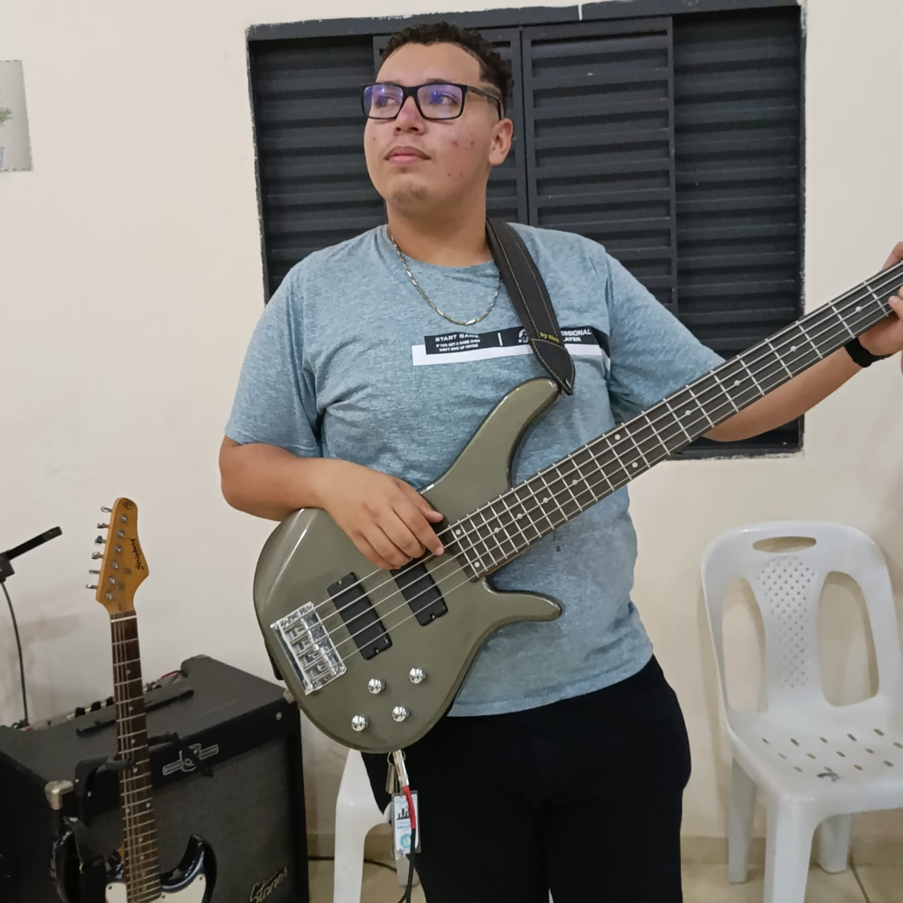
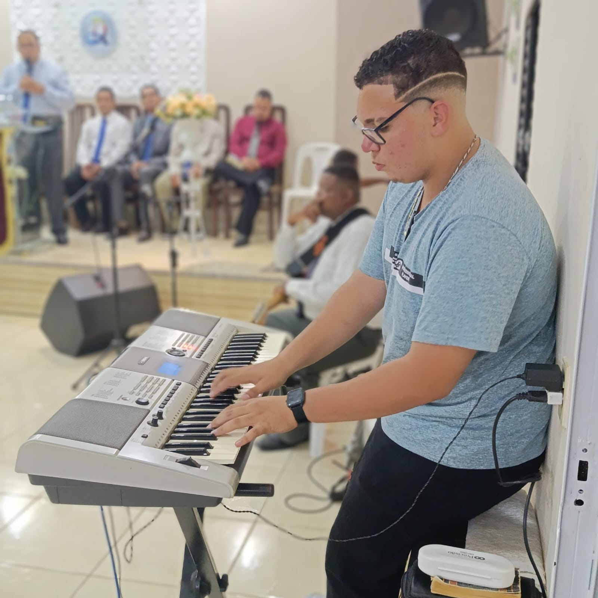
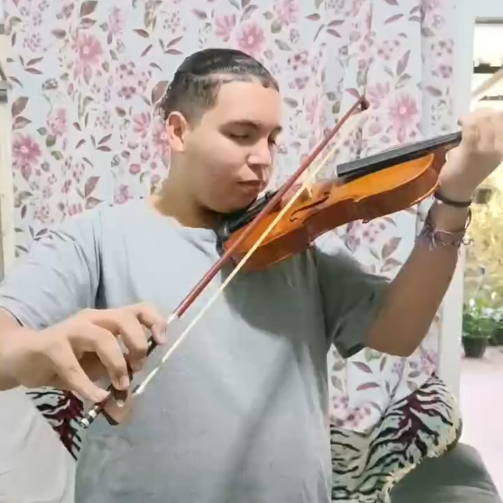
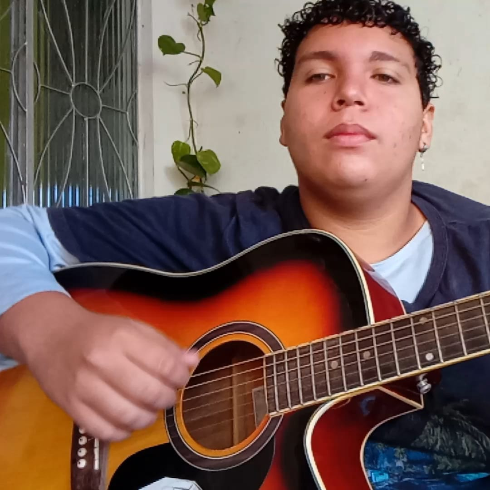
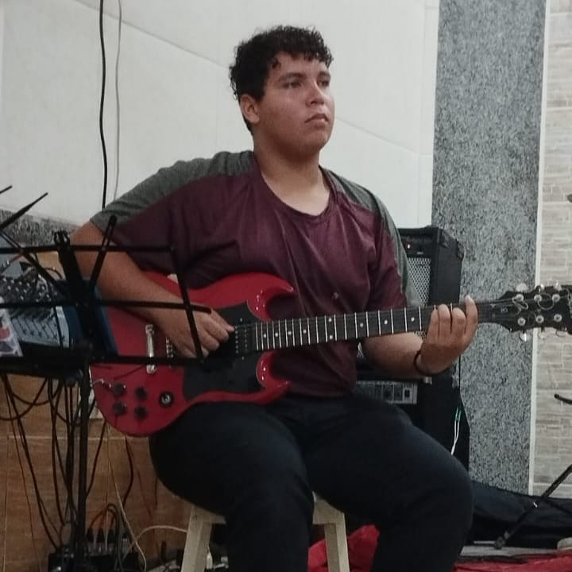

Sobre Mim:
Me chamo Hashidaki Nazuki, tenho 18 anos, nascido em 17 de novembro de 2006, diretamente do Rio de Janeiro - RJ. Desde cedo, minha vida foi marcada por melodias que ninguém mais ouvia. Quando outras crianças desenhavam ou jogavam bola, eu estava criando trilhas na minha cabeça para heróis, magos, cidades flutuantes e monstros ancestrais.
Aos 12 anos, entrei no Conservatório Musical de Leopoldina, onde aprofundei minha conexão com os sons e as histórias. Foi lá que conheci meu mentor, o lendário Marvyn Izel, reconhecido como um dos maiores guitarristas do Rio de Janeiro. Foi ele quem me ensinou que técnica sem emoção é só barulho. Desde então, transformei cada nota em narrativa.
Hoje, sou um multi-instrumentista com domínio em violão, guitarra, teclado, baixo e outros instrumentos que me ajudam a dar vida a mundos fantásticos através da música. Meu foco é criar composições que unem rock eletrônico com orquestra sinfônica, trazendo intensidade, drama e magia sonora para universos de RPG, videogames, fantasia medieval e cultura geek em geral.
Já colaborei com criadores de conteúdo, desenvolvedores de jogos e mestres de RPG para compor trilhas originais que vão de combates épicos a cenas emocionantes de tavernas ou jornadas introspectivas.
Minha missão é transformar histórias em som — e talvez, ao escutar minhas músicas, você descubra que a sua própria aventura também merece uma trilha digna de herói.
Aos 12 anos, entrei no Conservatório Musical de Leopoldina, onde aprofundei minha conexão com os sons e as histórias. Foi lá que conheci meu mentor, o lendário Marvyn Izel, reconhecido como um dos maiores guitarristas do Rio de Janeiro. Foi ele quem me ensinou que técnica sem emoção é só barulho. Desde então, transformei cada nota em narrativa.
Hoje, sou um multi-instrumentista com domínio em violão, guitarra, teclado, baixo e outros instrumentos que me ajudam a dar vida a mundos fantásticos através da música. Meu foco é criar composições que unem rock eletrônico com orquestra sinfônica, trazendo intensidade, drama e magia sonora para universos de RPG, videogames, fantasia medieval e cultura geek em geral.
Já colaborei com criadores de conteúdo, desenvolvedores de jogos e mestres de RPG para compor trilhas originais que vão de combates épicos a cenas emocionantes de tavernas ou jornadas introspectivas.
Minha missão é transformar histórias em som — e talvez, ao escutar minhas músicas, você descubra que a sua própria aventura também merece uma trilha digna de herói.

Contrabaixo

Teclado

Violino

Violão

Guitarra